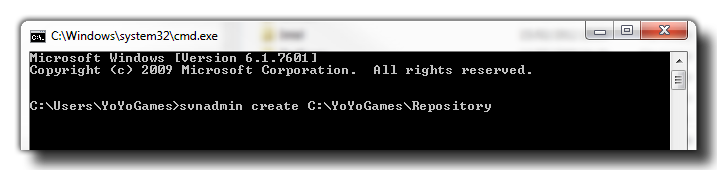
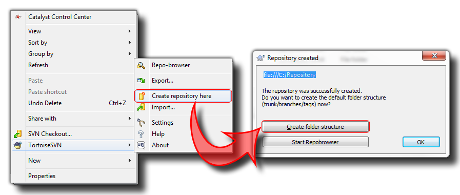

Getting Started With Source Control
This is the basic setup guide to get you started using Source Control with GameMaker:Studio and any one of the SVN Client packages available.
Before even opening GameMaker:Studio and working with Source Control, you will need to setup your PC (and that of your co-workers if you are in a team). GameMaker:Studio comes bundled
with a version of SVN that has been tried and tested with the software for compatibility, and if you do not have any other SVN versions on your machine this will be the default version that you use. However,
if you already have SVN installed, you can choose which to use from the Source Control Preferences Tab (the default is that which
is installed with GameMaker:Studio).
Please note, that for optimum performance and to minimise problems all machines involved should be using the same version of the software, so if one machine is on (for example) v1.0.72, then
they all should be using the v1.0.72 of that software. This is one of the reasons that we recommend you use the version bundled with GameMaker:Studio as it will ensure that your whole
team is using the same version at all times.
Once you have installed your SVN tools (or GameMaker:Studio), you will need to make your Repository. This is where all your files, backups and edits will be stored and is normally hosted
on a separate server, either on-line or in-house. To create the initial repository, and generally use your SVN, you can do it in one of two ways:
- either use command line functions to directly communicate with SVN or
- download and install some form of windows interface like TortoiseSVN
We recommend some form of windows based UI for dealing with all the SVN functions as it greatly simplifies everything and some of the functions that it offers (like conflict resolution and log files) are not
yet fully implemented within the GameMaker:Studio IDE, but the final choice is up to you and depends on what you feel most comfortable with!
Using The Command Line
If you are happy using the command line functions then you can create the repository easily by opening the windows command prompt, browsing to the network location where you wish to create the repository
(or just make sure to use the full path to the location) and typing:
svnadmin create NAME
where "NAME" is the name you wish to give your central repository (something like "Source" or "Repository"). Please note, that if the repository is to be created in a sub-folder then that sub-folder must
already exist, although the repository itself will be created by SVN. The code should look something like this:

Then press Enter and your repository will be created. Note that the above example is showing a path to a local repository (on the same computer) but you can change the path to a web address
for an online repository (recommended).
Using A Windows SVN Client
Local Repositories
Once you have installed your windows client for SVN, you should browse to the network location where you wish to create the repository and there create a new folder. Give this folder the name you want to use for your
central repository (something like "Source" or "Repository") and then right click on this folder. You should then go down the pop-up window to your SVN client and find where it says "Create repository here." It should be
something like this depending on what SVN client you have installed on your system:

The above image was made using Tortoise SVN, so the exact method of going about this may vary depending on your client application, however all windows SVN Clients have basically the same toolset used for creating
your repository.
Online Repository
If you have a network for your group then you may want to create a repository on your server, or you may wish to create an online repository using one of the many free repository services that are available out there.
if you are using an internal server or local network, then the simply follow the above instructions for a local repository but instead of creating the folders on your own PC, you will create them on your server. However,
if you are using an online repository then you will need to follow these steps:
- Sign in (or register) with your chosen site
- Create a new project
- Make sure that when filling in the details of your project that you have selected Subversion (SVN) as your version control system
Your online repository has now been created.
NOTE: Each online repository is slightly different so read the documentation related to the one that you choose! This is only a rough guide to get you started.